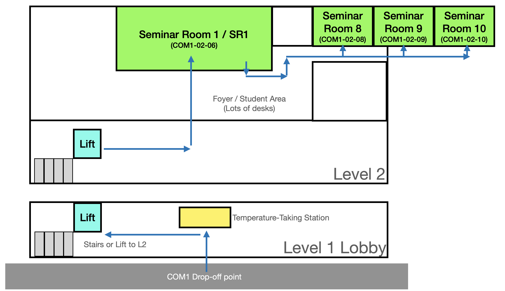

Local meetup held in conjunction with the 43rd Annual Meeting of the Cognitive Science Society
Tuesday July 27th, 2pm-5pm SGT
National University of Singapore, School of Computing (COM1)
In conjunction with CogSci 2021, we are piloting a new initiative: local meetup groups. Several members of the Cognitive Science Society will organize a local meetup group in their city, held in conjunction with CogSci 2021 and open to members and other CogSci attendees based in that city. The goal of these meetups is to build community and to facilitate interactions between cognitive scientists who live in the same city.
This page contains information about the Singapore meetup, organized by Desmond Ong. (Other cities include Melbourne, Hong Kong, Adelaide, Boston/Cambridge, and Chicago; see here for an updated list)
Disruptions due to COVID-19 provide an opportunity to think carefully about what the CogSci conference might look like in the future. One possible change is to hold local events around the world in conjunction with the gathering at the main conference site. Local events may be especially important for members who would be otherwise unable to participate, including early career researchers, researchers without travel funding, international researchers, and researchers who cannot travel because of professional or family obligations. Local events may also provide one way to reduce the environmental impact of the conference.
The event will be held in conjunction with local social distancing guidelines. The event will consist of an academic component where registered attendees and other interested researchers will be able to share their research. This may include talks and posters to be presented at CogSci, but we will also be open to presentations and discussions of related work that will not be presented at CogSci. This will allow researchers, especially students and early-career researchers, to get feedback from other local researchers in a more informal setting. These conversations could also potentially lead to new collaborations. At a broader level, this will contribute to community building among the Singaporean community of cognitive scientists, who are based across the various Institutes of Higher Learning (IHLs) as well as various other Research Institutes and Agencies (like A*STAR).
On the day itself, please go to COM1 building lobby (13 Computing Drive), and register at the level 1 lobby. There will be a staff present to take your temperature. After that, just go up 1 floor, and head straight through the foyer area, into the large room right in front of you. That will be SR1. Please see the map below:

To facilitate planning, especially in conjunction with local social distancing guidelines, we first would like to collect some information about potential attendees.
Please fill in this registration form by Saturday July 10th, 10pm SGT. We will use the email address you provided in the form to contact you with more specific logistical details.
Registration has closed.
If you have any questions, please contact Desmond at dco@comp.nus.edu.sg.